Attention 메커니즘은 모델이 입력 시퀀스의 관련 부분에 선택적으로 집중할 수 있게 하여 자연어 처리부터 컴퓨터 비전까지 다양한 작업에서 성능을 향상시킨다. Seq2seq과 어텐션 메커니즘에 대해 알아보자.
Seq2seq
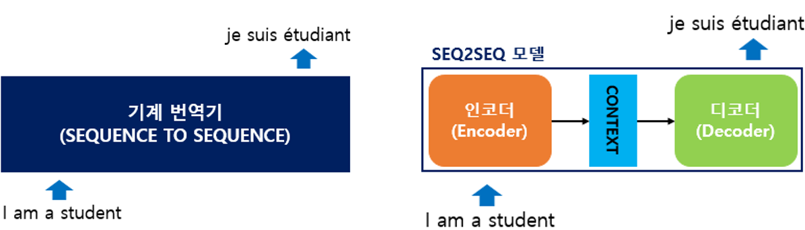
seq2seq는 입력된 시퀀스로부터 다른 도메인의 시퀀스를 출력하는 모델 - 예) 챗봇, 기계 번역, 내용 요약, STT(Speech to Text) 등
seq2seq는 크게 인코더와 디코더 두 개의 모듈로 구성 - 인코더는 입력 문장의 모든 단어들을 순차적으로 입력 받은 뒤 - 모든 단어 정보들을 압축해 하나의 벡터로 만듦 => 컨텍스트 벡터(context vector) - 컨텍스트 벡터를 디코더로 전송 - 디코더는 컨텍스트 벡터를 받아서 번역된 단어를 한 개씩 순차적으로 출력
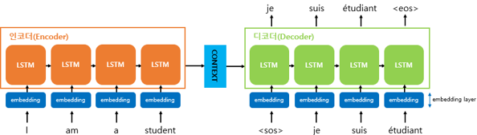
입력 문장의 단어 토큰 각각은 RNN 셀의 각 시점의 입력
인코더 RNN 셀의 마지막 시점 은닉 상태(컨텍스트 벡터)를 디코더 RNN 셀로 전송
컨텍스트 벡터는 디코더 RNN 셀의 첫번째 은닉 상태에 사용
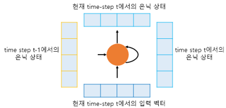
현재 시점 t에서의 은닉 상태는 과거 시점의 동일한 RNN 셀에서의 모든 은닉 상태의 값들의 영향을 누적해서 받아온 값- 컨텍스트 벡터는 입력 문장의 모든 단어 토큰들의 정보를 요약해서 담고 있음
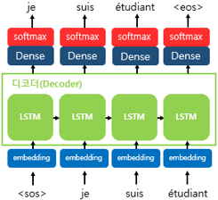
디코더에서 각 시점의 RNN 셀에서 출력 벡터가 나오면, 해당 벡터는 소프트맥스 함수를 통해 출력 시퀀스의 각 단어별 확률값을 반환, 디코더는 출력 단어를 결정
컨텍스트 벡터는 디코더의 초기 은닉 상태로만 사용할 수도 있고, 컨텍스트 벡터를 디코더가 단어를 예측하는 매 시점마다 하나의 입력으로 사용할 수도 있으며,
더 나아가 어텐션 메커니즘이라는 방법을 통해 지금 알고있는 컨텍스트 벡터보다 더욱 문맥을 반영할 수 있는 컨텍스트 벡터를 구하여 매 시점마다 하나의 입력으로 사용할 수도 있음.
어텐션 메커니즘
Attention Mechanism
RNN에 기반한 seq2seq 모델의 문제 1. 하나의 고정된 크기의 벡터에 모든 정보를 압축 => 정보 손실이 발생 2. RNN의 고질적인 문제인 기울기 소실(vanishing gradient) 문제
어텐션의 아이디어 - 디코더에서 출력 단어를 예측하는 매 시점마다, 인코더에서의 전체 입력 문장을 다시 한 번 참고 - 단, 전체 입력 문장을 전부 다 동일한 비율로 참고하는 것이 아니라, 해당 시점에서 예측해야 할 단어와 연관이 있는 입력 단어 부분을 좀 더 집중(attention)해서 봄
어텐션 함수(attention function)
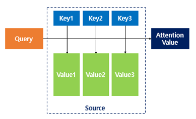
Attention(Q, K, V) = Attention Value
주어진 ’쿼리(Query)’에 대해서 모든 ’키(Key)’와의 유사도를 각각 구함 - 이 유사도를 키와 맵핑되어있는 각각의 ’값(Value)’에 반영 - 유사도가 반영된 ’값(Value)’을 모두 더해서 리턴 - 어텐션 값(Attention Value)
닷-프로덕트 어텐션(Dot-Product Attention)
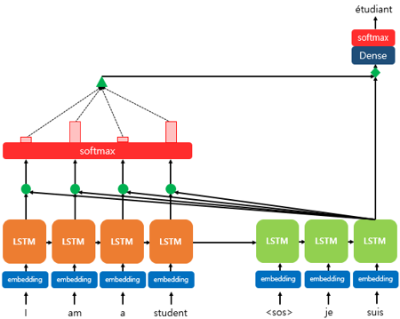
예시) - 디코더의 세번째 LSTM 셀에서 출력 단어를 예측. - 디코더의 첫번째, 두번째 LSTM 셀은 이미 어텐션 메커니즘을 통해 “je”와 “suis”를 예측하는 과정을 거쳤다고 가정 - 세번째 LSTM 셀은 출력 단어를 예측하기 위해서 인코더의 모든 입력 단어들의 정보를 다시 한번 참고
소프트맥스 함수를 통해 나온 결과값은 I, am, a, student 단어 각각이 출력 단어를 예측할 때 얼마나 도움이 되는 지의 정도를 수치화한 값
==> 이를 하나의 정보로 담아서 디코더로 전송 (녹색 삼각형)
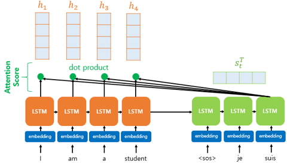
어텐션 스코어(attention score)
현재 디코더의 시점 \(t\)에서 단어를 예측하기 위해, 인코더의 모든 은닉 상태 각각이 디코더의 현 시점의 은닉 상태 \(s_t\)와 얼마나 유사한지를 판단하는 스코어값
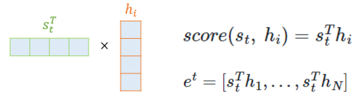
닷-프로덕트 어텐션에서는 스코어 값을 구하기 위해 \(s_t\)를 전치하고 각 은닉 상태와 내적(dot product)을 수행
즉, 모든 어텐션 스코어 값은 스칼라가 됨
인코더의 모든 은닉 상태의 어텐션 스코어의 모음값을 \(e^t\)라고 정의
어텐션 분포(attention distribution)
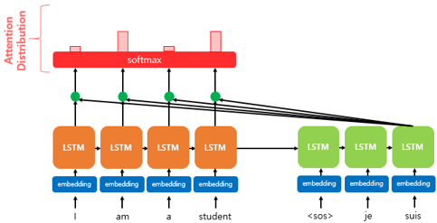
\(e^t\)에 소프트맥스 함수를 적용하여, 모든 값을 합하면 1이 되는 확률 분포를 얻음
각각의 값는 어텐션 가중치임
\(\alpha^t = softmax(e^t)\)
어텐션 값(attention value)
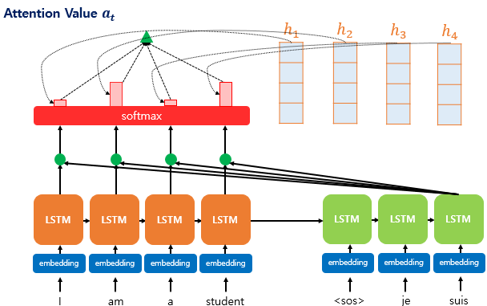
어텐션의 최종 결과값을 얻기 위해서 각 인코더의 은닉 상태와 어텐션 가중치값들을 곱하고, 최종적으로 모두 더함 - 즉, 가중합(Weighted Sum)을 진행
이러한 어텐션 값 \(a_t\)는 종종 인코더의 문맥을 포함하고 있다고 하여, 컨텍스트 벡터(context vector)라고도 불림
\(a_t = \sum^{N}_{i=1} \alpha_i^{t}h_i\)
어텐션 값과 디코더 은닉상태 연결
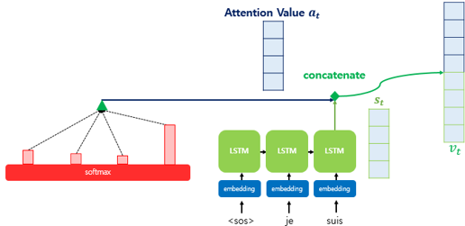
어텐션 값 \(a_t\)를 \(s_t\)와 결합(concatenate)하여 하나의 벡터로 만듦 => \(v_t\)
이 \(v_t\)를 예측 연산의 입력으로 사용하므로서 인코더로부터 얻은 정보를 활용하여 더 잘 예측할 수 있게 됨.
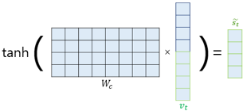
\(\tilde{s}_t=\tanh(\mathbf{W}_c[a_t;s_t]+b_c)\)
논문에서는 \(v_t\)를 바로 출력층으로 보내기 전에 신경망 연산을 한 번 더 추가 (가중치 행렬과 곱하고, 편향 추가, 하이퍼볼릭탄젠트 함수)
어텐션 값(attention value) - 컨텍스트 벡터(\(a_t\))와 현재 시점의 입력인 단어의 임베딩 벡터를 연결하고, 현재 시점의 새로운 입력으로 사용 - 이전 시점의 셀로부터 전달받은 은닉 상태 \(𝑠_{𝑡−1}\)와 현재 시점의 새로운 입력으로부터 \(𝑠_𝑡\)를 구함